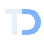

01 / Blade ring
Three swept blades and an annular casing. A compact reference to turbomachinery.
Light surface
turbodash
16 px
24 px
48 px

Dark surface
turbodash
16 px
24 px
48 px
The blade ring is approved and used in the app header. Axial cascade and TD monogram are retained as alternative designs. Each has a transparent light-surface and dark-surface version, shown with the same lowercase wordmark.
Three swept blades and an annular casing. A compact reference to turbomachinery.
Three streamlined profiles. Directional, quiet and close to the geometry itself.

turbodashPlain geometric initials with an open curved channel. The most restrained direction.

turbodash